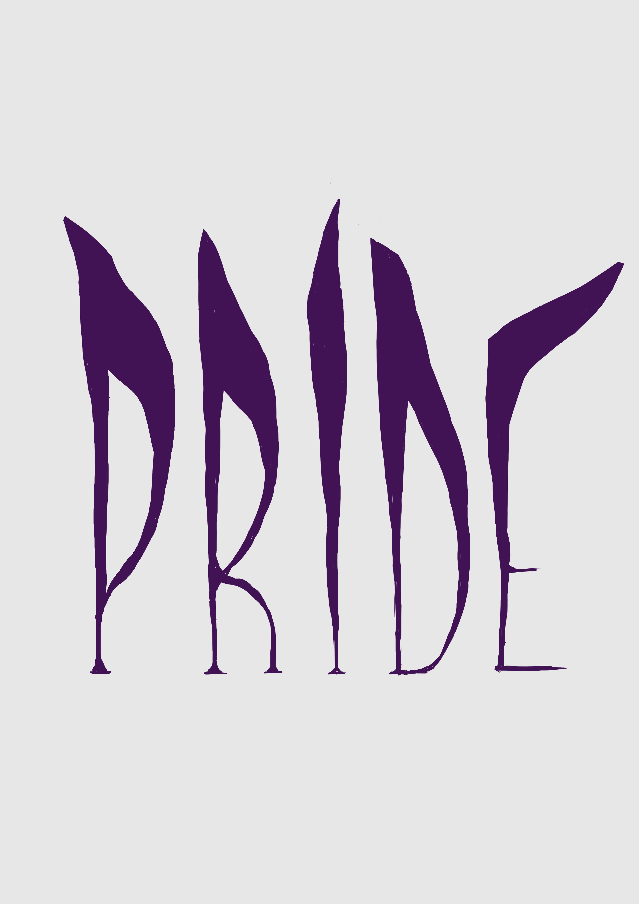
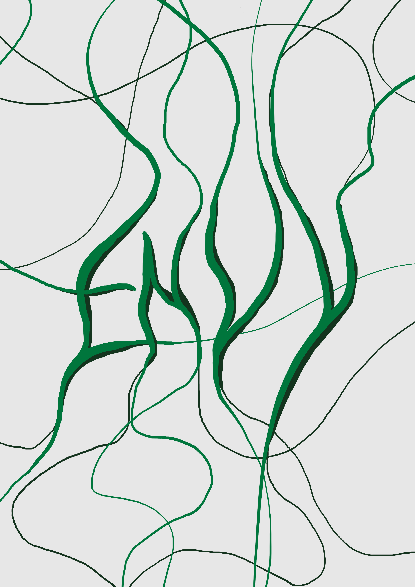
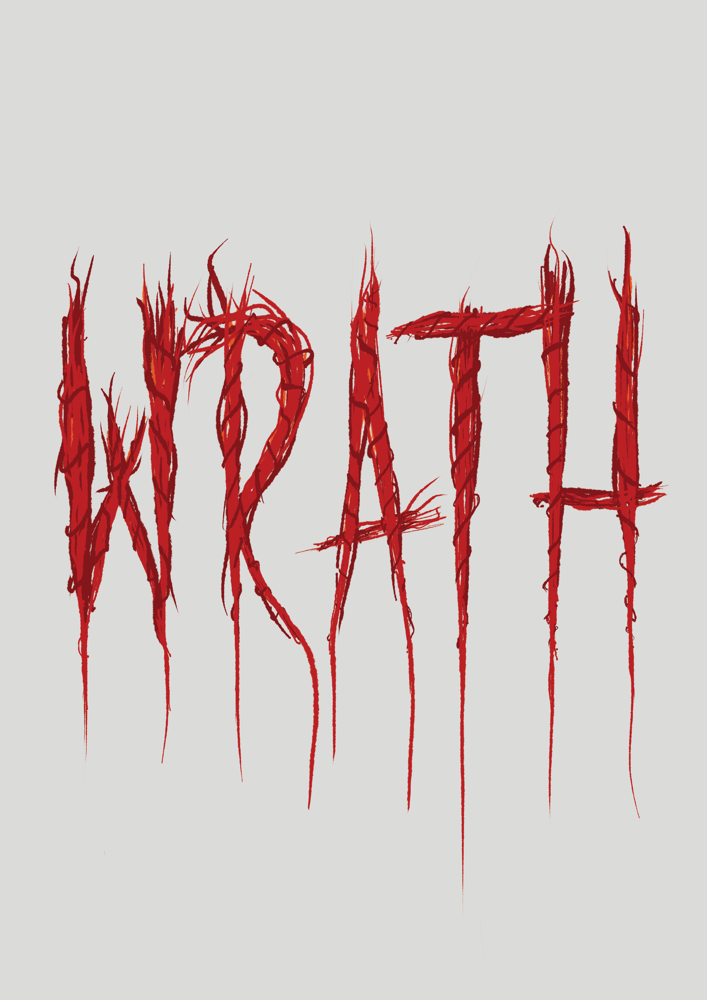
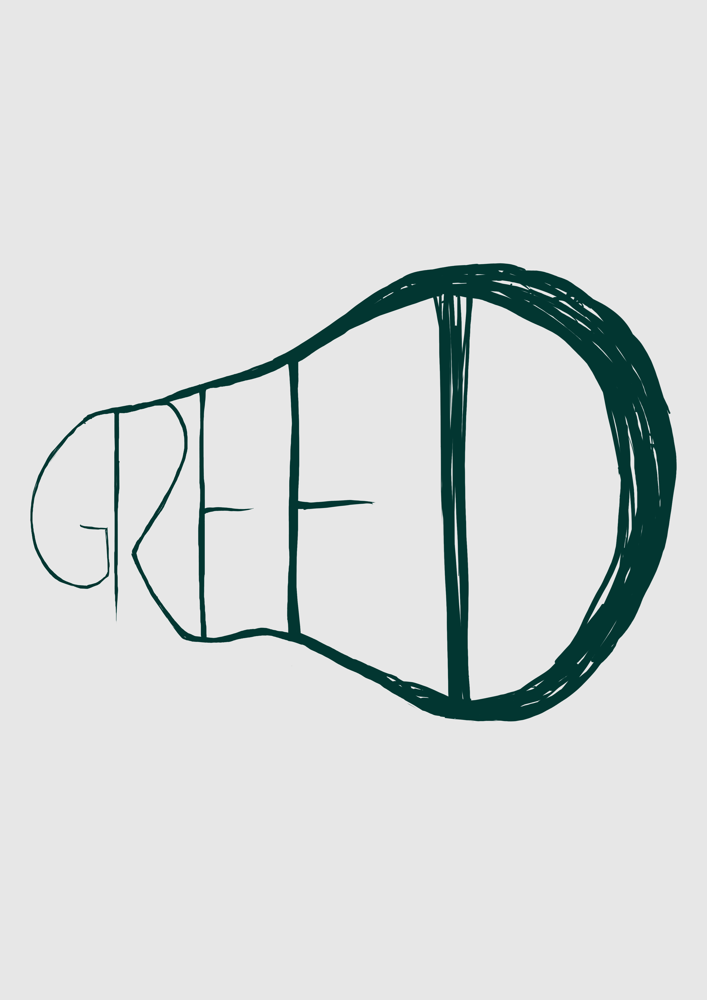
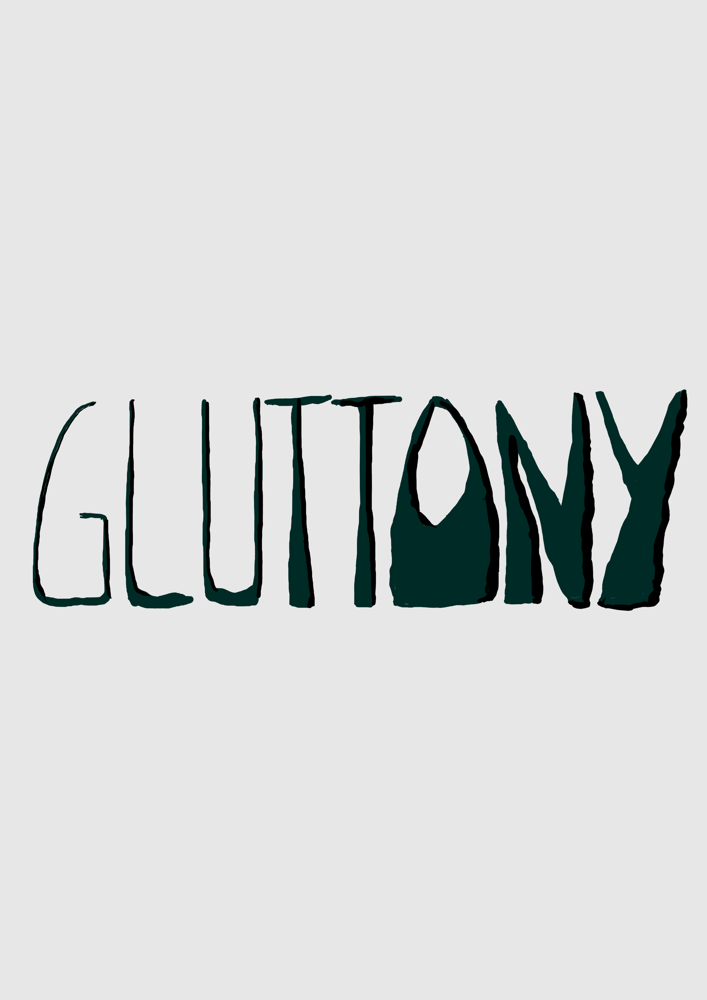
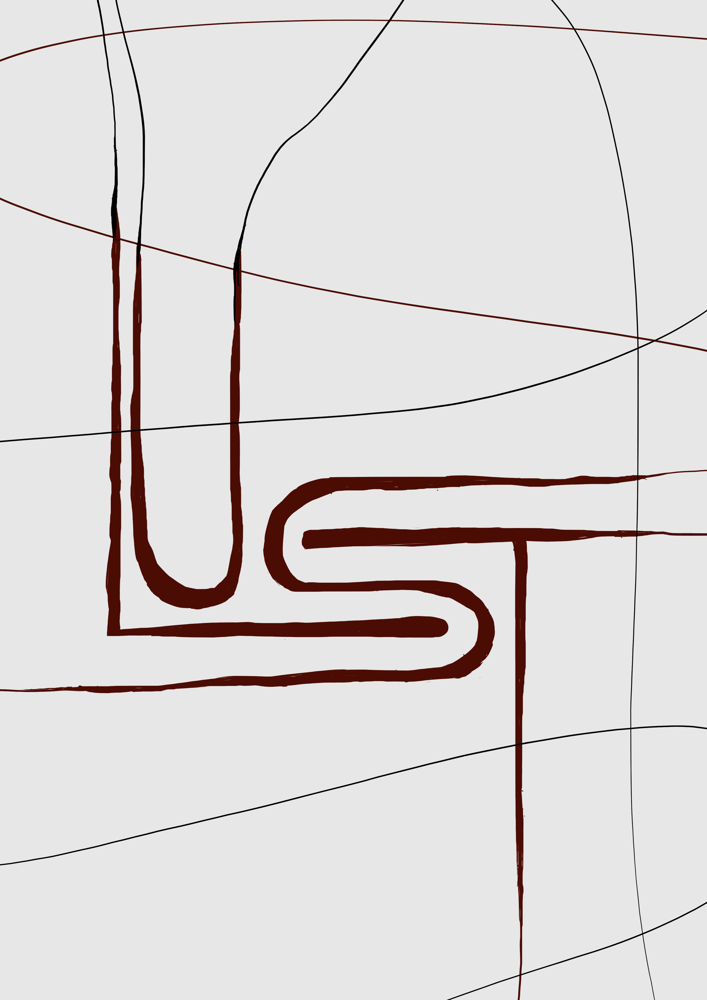

The Seven Deadly Sins
Poster Design and Animation







Initially, I made posters experimenting on just typography for each of the seven deadly sins.
Then, I animated the words and made a teaser trailer for the sins. The song used was “Delusions of Saviour” by Slayer.